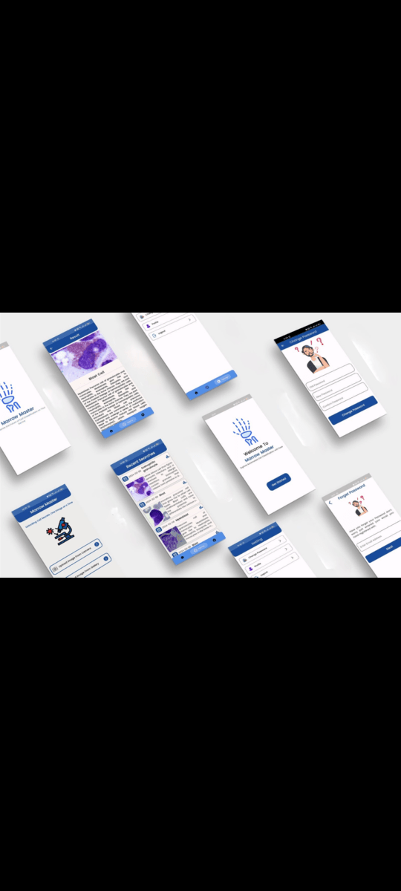
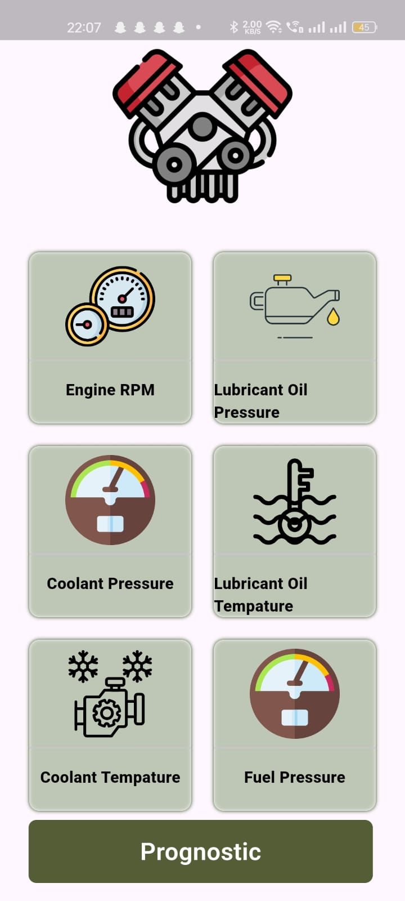
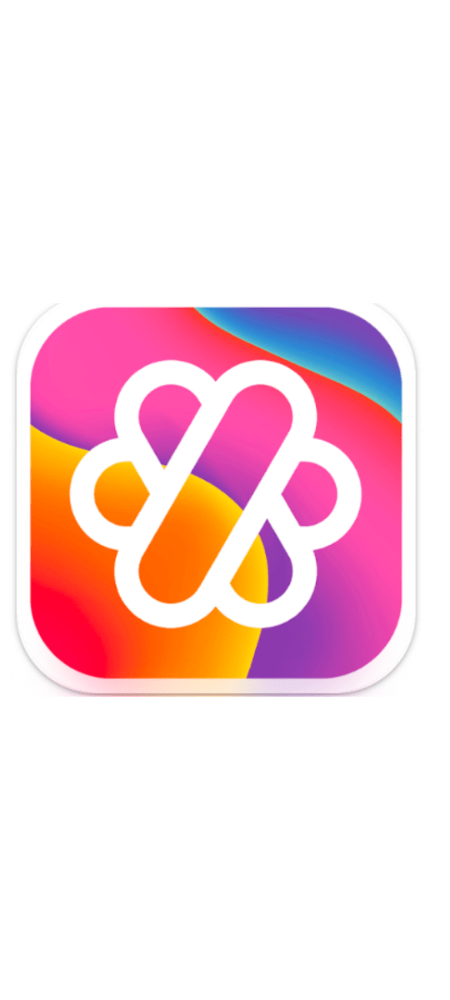
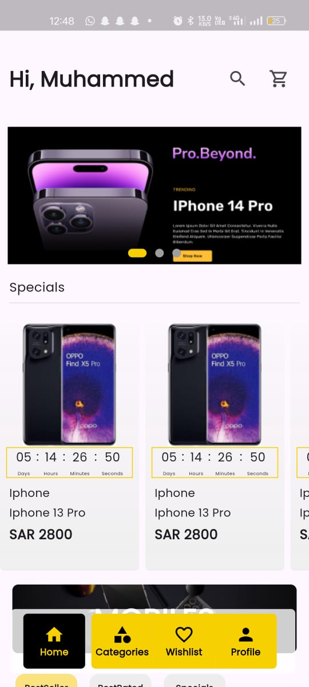
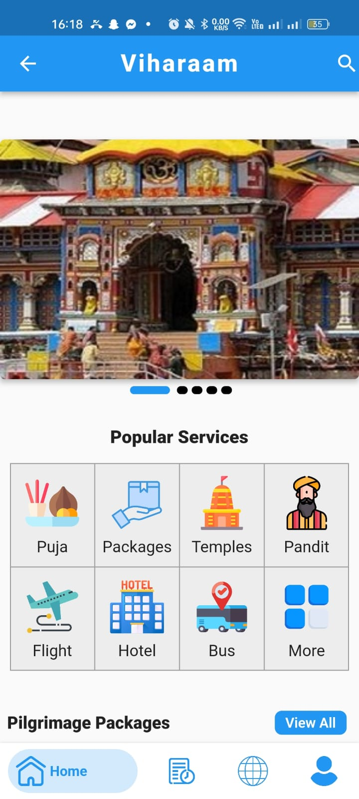
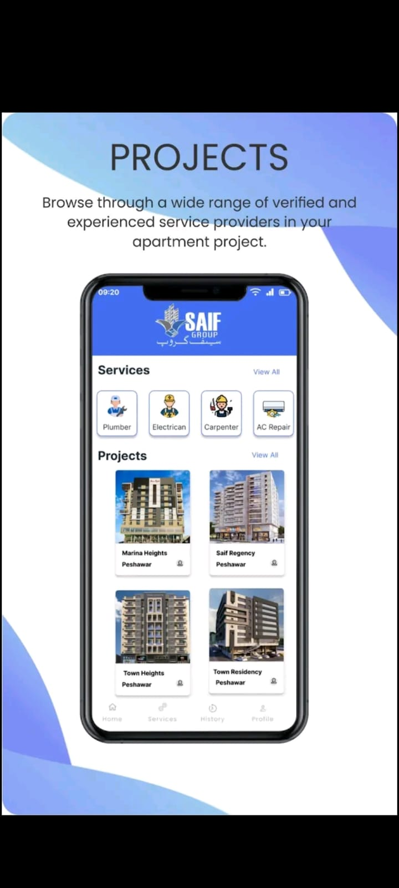
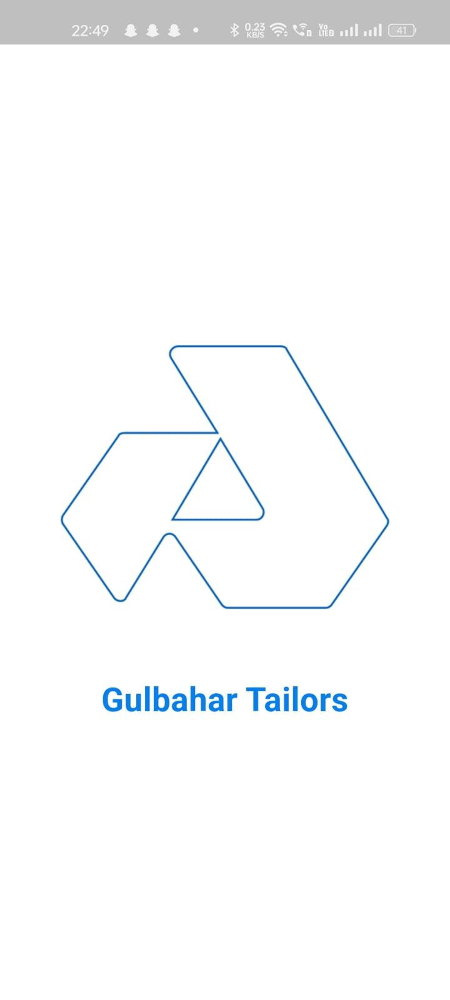
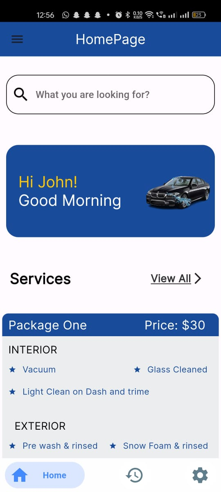
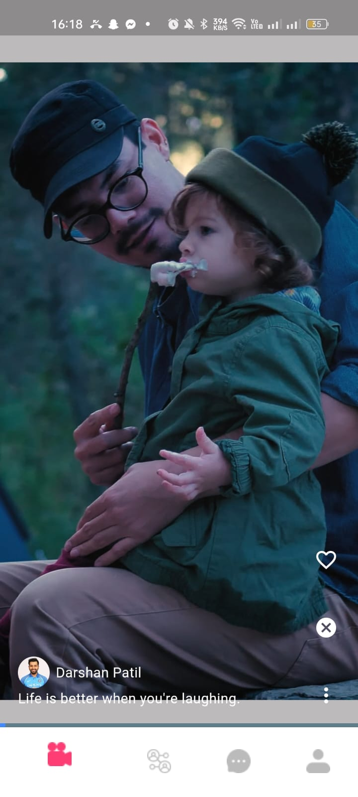

About Me
Education
MS AI ScholarResearch
EEG, BCI & AIPublication
IEEE DOI
I am an AI Researcher and Computer Vision Engineer with experience in machine learning, deep
learning, biomedical signal processing, healthcare AI, and production-ready application
development. My current research direction focuses on EEG-based analysis, brain-computer
interfacing, silent speech decoding, multimodal learning, and human-centered AI systems.
For research and PhD opportunities, I bring hands-on experience with scalp EEG acquisition,
preprocessing, artifact handling, feature extraction, model validation, manuscript preparation,
and interdisciplinary collaboration. For jobs and freelance work, I can translate AI workflows
into usable products through computer vision, OCR, document understanding, Flutter apps,
Firebase-backed systems, APIs, and clean user interfaces.
My goal is to work on practical AI systems that are academically strong, technically reliable,
and useful in real healthcare, assistive technology, education, and industrial settings.
Technical Skills
Machine Learning / AI
Computer Vision
Biomedical Signal Analysis
Quantitative Research
App & Web Development
Tools & Platforms
Programming Languages
Databases / Platforms
Soft Skills
Research & Academic Profile
My research work connects biomedical signal processing, machine learning, deep learning, and healthcare AI. I am especially interested in objective assessment systems using EEG, physiological signals, medical images, and multimodal sensor data.
1
IEEE DOI Publication
32
Channel EEG System
3.58
MS AI CGPA
Research Interests
Biomedical Signal Processing
EEG, EMG, GSR, and physiological signal analysis for healthcare, neuroscience, rehabilitation, and human-state understanding.
Computer Vision & Deep Learning
Vision-based models for image analysis, movement understanding, object detection, OCR, and real-world AI applications.
Medical Imaging & Healthcare AI
Machine learning and deep learning for medical image analysis, disease assessment, and clinical decision-support systems.
Multimodal Machine Learning
Fusion of visual, physiological, and sensor-based data for prediction, classification, assessment, and intelligent decision-making.
Human-Centered & Assistive AI
Assistive technologies, rehabilitation systems, behavior analysis, personalized healthcare, and objective functional assessment.
Publication
Enhancing Silent Speech Decoding Using EEG and Gradient Boosting Classifiers
Comparative analysis of XGBoost and LightGBM on a native Arabic silent speech dataset with Rizwan Shah, Amina Riaz, Shahnawaz Qureshi, Ali Zia, and Uzair Iqbal.
View DOIExperience
Research Assistant
- Conducted neuro-AI, BCI, and biomedical signal analysis research using EEG signal processing, machine learning, and deep learning.
- Designed EEG data acquisition protocols with the Neuroelectrics ENOBIO Research 32 scalp EEG system.
- Built EEG analysis pipelines for preprocessing, artifact handling, feature extraction, model training, and validation.
- Developed MoE, XGBoost, and LightGBM models for multi-band brain signal analysis and classification.
Computer Vision Engineer
- Designed computer vision pipelines for document understanding, layout analysis, OCR, and object detection.
- Worked on YOLO-based models and scalable processing workflows for complex engineering drawings.
- Supported preprocessing, annotation strategy, model training, fine-tuning, and performance evaluation.
- Improved model robustness through augmentation, feature engineering, and iterative error analysis.
Lab Engineer
- Instructed labs for Programming for AI, Artificial Intelligence, and Introduction to Data Science.
- Facilitated practical work in Python, NumPy, Pandas, Matplotlib, and Google Colab.
- Designed Digital Image Processing labs covering thresholding, filtering, histogram equalization, and image enhancement.
- Led data visualization labs and supported students with reports, viva preparation, troubleshooting, and academic projects.
Education, Awards & Training
MS Artificial Intelligence
- PAF-IAST, Haripur | 2024 - Present | CGPA 3.58/4.00
- BS Software Engineering, COMSATS Abbottabad | CGPA 3.32/4.00
- DAE Electrical, GCT Abbottabad | 74%
- Advanced Machine Learning and Advanced Deep Learning
- Digital Image Processing, Computer Vision, and Pattern Recognition
- Natural Language Processing and Recommender Systems
- Data Science Tools and Advanced Data Visualization
- DEI Scholarship from NIRx Medical Technologies
- Fully funded master's scholarship at PAF-IAST
- Finalist, Google Global Solution Challenge
- 1st Place, Build with AI Idea Competition
- Runner-Up, SparkPitch Idea Competition
- NRG Summer School on AI for Brain-Controlled Applications
- IBM machine learning and exploratory data analysis courses
- Google Generative AI and Vertex AI trainings
- TensorFlow/Keras, Python, Flask, and Flutter Bloc with Firebase
What I Offer
Mobile & Web
Development
AI / ML
Engineering
Computer Vision
& OCR
Research &
Data Science
EEG & Healthcare
AI
My Work

Marrow Master

Gesture Detector
OsteoDetect

Safe Guard

Uniyo

Aaaladen

Viharam

Complaint App

Gulbahar Tailor

Car Wash App
